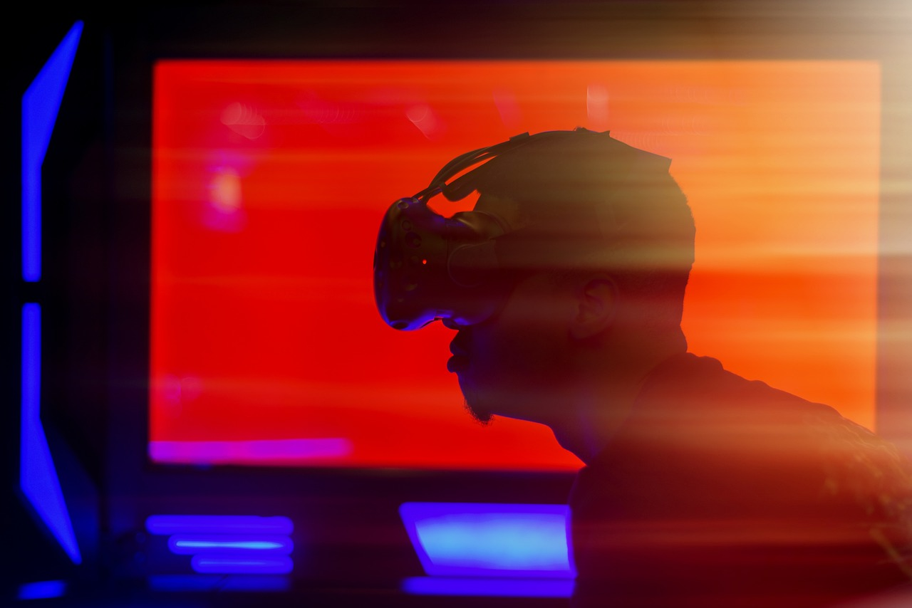

The Future of VR: How Virtual Reality is Changing the Way We Live
Virtual Reality (VR) is no longer just a futuristic concept; it is actively transforming various industries. From gaming and entertainment to healthcare, education, and remote work, VR technology is reshaping how we interact with digital environments. In gaming, VR provides immersive experiences that allow players to step inside virtual worlds. In healthcare, VR is being used for medical training, therapy, and even pain management. Education is also evolving, with VR enabling students to take virtual field trips and conduct interactive experiments. As VR continues to advance, its potential applications are expanding, making it an integral part of our daily lives.
VR in Gaming and Entertainment
One of the most obvious areas where VR is making an impact is gaming. Unlike traditional gaming, where players control characters using a keyboard, mouse, or controller, VR allows users to physically move, interact with objects, and fully immerse themselves in digital environments. Titles like *Half-Life: Alyx*, *Beat Saber*, and *VRChat* have demonstrated how VR can revolutionize gaming, offering players an unparalleled level of engagement and realism.
In games like *Half-Life: Alyx*, players can pick up objects, reload weapons manually, and interact with their surroundings in ways that feel incredibly natural. *Beat Saber*, on the other hand, turns rhythm gaming into a full-body experience, where players must slice through blocks to the beat of the music using virtual lightsabers. Meanwhile, *VRChat* has transformed social gaming by allowing users to embody custom avatars and explore user-generated worlds, fostering a new form of interactive entertainment that blends gaming with social connection.
Beyond gaming, the movie and entertainment industries are also embracing VR, offering 360-degree experiences that let audiences step inside the stories they love. Interactive films, such as *Wolves in the Walls* and *The Line*, enable viewers to actively participate in narratives rather than just passively watching. VR is also reshaping live entertainment, with major music artists and film studios leveraging the technology to create immersive concerts and experiences. Events like *Travis Scott’s Astronomical* concert in *Fortnite* and *Horizon Venues* VR performances allow fans to enjoy live music in dynamic virtual spaces, providing an entirely new way to engage with their favorite artists.
With VR technology continuing to advance, the possibilities for gaming and entertainment are expanding rapidly. Developers are experimenting with haptic feedback suits, full-body tracking, and AI-driven NPC interactions to create even more realistic and engaging experiences. As hardware becomes more affordable and accessible, VR gaming is set to become a mainstream form of entertainment, pushing the boundaries of what is possible in interactive media.
VR in Healthcare and Therapy
Beyond entertainment, VR is making a significant difference in the medical field. Surgeons are using VR simulations for practice before performing delicate procedures. Patients suffering from PTSD, anxiety, and phobias are undergoing VR therapy to gradually confront their fears in a controlled environment. Additionally, VR is being used for pain management, allowing patients to immerse themselves in calming virtual settings to reduce discomfort during treatments.